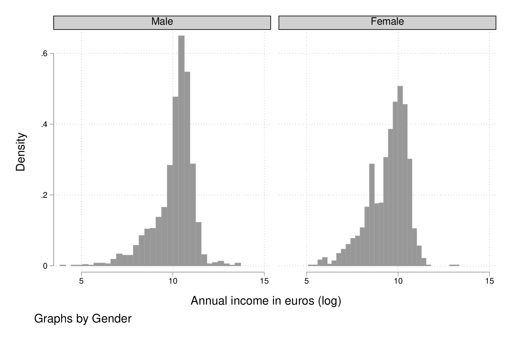

Stata : gestion des données
Table des matières
Stata est reconnu pour faciliter la gestion et le recodage des données ainsi que l’automatisation de tâches répétitives. Ce chapitre a pour but de discuter les commandes essentielles permettant de manipuler des variables contenues dans un tableau de données. Une caractéristique de Stata est que le concept de variable est à prendre au sens statistique du terme, et non au sens informatique : Stata dispose de « macros » pour tout ce qui relève de la programmation, et ceci fait l’objet d’un autre chapitre.
Gestion d’un tableau de données
Le format DTA
On a déjà vu un exemple de format natif Stata avec les données auto utilisées dans le chapitre précédent pour illustrer les principes de base de Stata : il s’agit des fichiers DTA. La spécification de ce type de fichier peut être consultée dans le manuel en ligne pour le mot clé dta. Il s’agit d’un format binaire qui a quelque peu évolué entre les versions 12, 13 et 14 de Stata. Si Stat/Transfer permet de passer d’un format à l’autre sans problème, le package foreign de R (read.dta) ne permet de lire que les fichiers Stata 12 ou inférieurs et il est préférable d’utiliser le package haven (read_dta) pour les versions 13 et plus. Cette librairie repose sur la librairie ReadStat, également utilisable en ligne de commande. Attention, dans ce cas, moins d’options sont disponibles (à la date de rédaction de ce chapitre), en particulier en ce qui concerne la gestion des dates et des formats de variable. Une autre solution consiste à utiliser le package readstata13. Pour les utilisateurs de Python, le package Pandas inclut un utilitaire pour la lecture de fichiers Stata (from pandas.io.stata import StataReader).
Les changements notables entre les formats DTA 12 (juillet 2011), 13 (juin 2013, help dta_117) et 14 (avril 2015, help dta ou help dta_119 car il s’agit de la même version que pour Stata 15) portent sur l’utilisation de chaînes de caratères longues, la gestion des facteurs et l’encodage UTF-8 des chaînes de caractères (incluant les noms de variable). Les versions DTA pour Stata 14 et 15 sont identiques, sauf dans le cas de Stata 15/MP qui autorise plus de 32767 variables et possède une structure légèrement différente. En pratique, c’est le support des caratères accentués pour les utilisateurs concernés qui est vraiment appréciable dans la version 15.
Les différentes méthodes permettant de lire des fichiers antérieurs ou postérieurs à la version utilisée de Stata sont décrit dans l’article Reading a Stata dataset with an older version of Stata.1 Si l’on souhaite connaître la version dans laquelle a été sauvé un fichier DTA sans avoir à lire l’en-tête du fichier binaire lui-même, il suffit d’utiliser la commande dtaversion (à partir de Stata 13). Quant à la commande saveold, elle permet de sauvegarder un tableau de données au format Stata 13 ou au format Stata 12 (avec l’option version(12)). Notons que dans le cas où un fichier a été enregistré avec des caractères accentués depuis Stata 15 vers Stata 13, grâce à saveold, traiter ce fichier depuis Stata 13 résultera en une perte du codage Unicode dans l’interface graphique, mais celui-ci reste toutefois géré à peu près correctement dans un terminal.
Les nouvelles versions majeures de Stata sont publiées à peu près tous les deux ans. Pour un historique du développement de Stata, voir l’article de Nick Cox paru dans le Stata Journal [2].
Propriétés d’un tableau Stata
Les données d’illustration sont tirées de [3] et sont disponibles sur le site de Stata Press. Il est possible de télécharger les données directement depuis le site de Stata à l’aide d’une commande telle que net from http://www.stata-press.com/data/kk3/, suivie de net install data, ou alors d’utiliser le fichier gsoep09.dta disponible dans le répertoire data/ de ce projet. Le fichier DTA situé dans le répertoire data/ correspond au fichier data1.dta dans l’archive ZIP ou sur le site Stata.
Voici les instructions permettant de charger les données en mémoire, en supposant que le répertoire de travail contienne bien un répertoire data/ dans lequel se trouve le fichier gsoep09.dta :
clear all use data/gsoep09 describe, short
set more off clear all use data/gsoep09 (SOEP 2009 (Kohler/Kreuter)) describe, short Contains data from data/gsoep09.dta obs: 5,411 SOEP 2009 (Kohler/Kreuter) vars: 65 13 Feb 2012 17:08 size: 568,155 Sorted by: persnr
La commande describe permet de décrire le tableau de données. Parmi ses différentes options, short permet de limiter la description à l’en-tête du tableau, c’est-à-dire les informations relatives au nombre d’observations et de variables et aux éventuelles annotations du tableau, tandis que simple permet de n’afficher que la liste des variables.
describe, simple
describe, simple persnr income rooms eqplif pic wor10 hhnr2009 hhinc renttype eqpnrj lsat wor11 state hhsize rent hhtyp wor01 wor12 ybirth hhsize0to14 reval area1 wor02 sample sex rel2head eqphea area2 wor03 intnr mar ymove eqpter dvisits wor04 hhnr edu ybuild eqpbas heval wor05 strata yedu condit eqpgar hsat wor06 psu voc dsat eqpalm polint wor07 dweight emp size eqpsol pia wor08 xweights egp seval eqpair pib wor09
Notons qu’il s’agit de données d’enquête, même si nous n’exploiterons pas vraiment les poids de sondage dans les illustrations de ce chapitre. Les dernières variables du tableau sont spécifiques à Stata et permettent d’identifier les unités de sondage (strata et psu) et les poids analytiques (dweight et xweights).
Pour obtenir un aperçu des premières lignes du tableau, et en restreignant la liste des variables affichées, voici comment l’on procéderait avec list :
list persnr-sex in 1/5
list persnr-sex in 1/5
+-------------------------------------------------------+
| persnr hhnr2009 state ybirth sex |
|-------------------------------------------------------|
1. | 8501 85 N-Rhein-Westfa. 1932 Male |
2. | 8502 85 N-Rhein-Westfa. 1939 Female |
3. | 15001 150 N-Rhein-Westfa. 1946 Male |
4. | 15002 150 N-Rhein-Westfa. 1953 Female |
5. | 18201 111373 Mecklenburg-V. 1969 Male |
+-------------------------------------------------------+
On reviendra en détail sur les listes de variables et le qualifieur if dans les sections suivantes. En attendant, il suffit de savoir que l’on peut indiquer une étendue de variables en indiquant le nom de la première variable séparé du nom de la dernière variable par un tiret et que l’instruction in 1/5 permet de ne lister que les observations allant de la ligne 1 à 5. Les lignes correspondent à des unités statistiques mais une des particularités de Stata est l’usage extensif de procédures de tri du tableau de données, par exemple pour calculer des statistiques agrégées par groupes d’unités statistiques, de sorte qu’il n’est pas recommendé de raisonner selon l’hypothèse qu’un numéro de ligne désigne une seule et même unité statistique (immutabilité).
Autres sources de données
En dehors des tableaux de données au format Stata, il est possible d’importer des sources de données de différents types. Outre les fichiers transport de SAS ou des bases de données relationnelles pour lequelles on dispose d’ODBC, Stata gère de manière assez simple les fichiers texte et Excel. Le cas échéant, le logiciel Stat/Transfer permet de passer de pratiquement n’importe quel format d’origine à un foramt Stata 13 (ou 15 avec la dernière version de Stat/Transfer).
Par défaut, Stata cherche les fichiers dans le répertoire de travail courant. On peut le changer avec la commande cd ou avec le navigateur de répertoire situé dans la barre d’état.
Considérons le fichier CSV, birthwt.csv, dont les premières lignes sont affichées ci-dessous :
low,age,lwt,race,smoke,ptl,ht,ui,ftv,bwt 0,19,182,2,0,0,0,1,0,2523 0,33,155,3,0,0,0,0,3,2551 0,20,105,1,1,0,0,0,1,2557 0,21,108,1,1,0,0,1,2,2594 0,18,107,1,1,0,0,1,0,2600
La commande import delimited de Stata 13 permet d’importer l’ensemble des données une fois que l’on a précisé le type de délimiteur de champs (ici, des virgules) et signalé la présence d’une ligne d’en-tête regroupant le nom des variables : import delimited "birthwt.csv", clear delimiter(comma) varnames(1). Les guillemets autour du nom du fichier sont, comme dans les cas des fichiers au format Stata, facultatifs si le nom du fichier ne contient pas d’espaces. L’extension est obligatoire en revanche.
Voici un autre cas de figure, birthwt.dat, dans lequel les données sont séparées par des espaces ou des taquets de tabulation, le fichier ne contenant pas de ligne d’en-tête :
0 19 182 2 0 0 0 1 0 2523 0 33 155 3 0 0 0 0 3 2551 0 20 105 1 1 0 0 0 1 2557 0 21 108 1 1 0 0 1 2 2594 0 18 107 1 1 0 0 1 0 2600
La commande infile permet de gérer ce type de fichier, sachant que dans ce cas il est nécessaire de préciser le nom des variables : infile low age lwt race smoke ptl ht ui ftv bwt using "birthwt.dat", clear. Notons que Stata préfère généralement les extensions de type raw (utilisé par défaut par la commande write) ou txt. La même commande infile permet également d’importer des données brutes accompagnées d’un dictionnaire de données (« codebook »). Voici un exemple de dictionnaire de données pour l’exemple précédent :
dictionary {
_first (1)
byte low "birthweight <2500g"
byte age "age of mother"
int lwt "weight at last menstrual period"
byte race "race"
byte smoke "smoked during pregnancy"
byte ptl "premature labor history (count)"
byte ht "has history of hypertension"
byte ui "presence , uterine irritability"
byte ftv "number of visits to physician during 1st trimester" int bwt "birthweight (grams)"
}
L’importation se réalise alors à l’aide de l’instruction infile using "birthwt.dct", using(birthwt.dat) clear. Encore une fois, les guillemets sont facultatifs si le nom de fichier est sans ambiguïté.
Une autre commande, infix, moins souple que infile, permet de gérer le cas des dictionnaires de données et des données en format fixe, tel qu’on peut encore le trouver dans les fichiers de données des années 80-90. Un exemple est disponible dans le fichier data/lowbwt.dat. Le fichier dictionnaire birthwt.dct contient cette fois-ci les instructions de formatage et de nommage des variables, ainsi que le nom du fichier de données lui-même :
infix dictionary using lowbwt.dat {
8 first
1 lines
int id 2-4
byte low 9-10
byte age 16-18
int lwt 22-25
byte race 31-32
byte smoke 39-40
byte ptl 47-48
byte ht 54-55
byte ui 60-61
byte ftv 66-67
int bwt 72-76
}
L’importation se réalise dans ce cas à l’aide de l’instruction infix using lowbwt.dct, clear.
Type de variables
On distinguera essentiellement les nombres et les caractères, et par extension les chaînes de caractères. Les variables catégorielles sont représentées sont valeurs discrètes auxquelles on associe le plus souvent des étiquettes textuelles, encore appelée « label ».
Le mode de stockage des variables numériques, qui s’apparente à la précision de la variable numérique dans sa représentation machine, peut être de 5 types, par degré croissant de précision : byte, int, long, double et float. Les deux derniers types représentent des nombres réels (4 et 8-bytes IEEE float). Par exemple, les variables de type byte permettent de représenter des nombres allant de -127 à 1002 tandis que le type long correspond à un intervalle de valeurs de \([-2 147 483 647, 2 147 483 620]\). Le type byte est généralement utilisé pour le codage numérique des variables catégorielles (binaires ou à plusieurs niveaux). Il est préférable d’utiliser le type long, voire double, ou alors des chaînes de caractères (string) pour coder les identifiants uniques d’une base de données.
Dans le visualisateur de données (browse), les variables numériques apparaissent en noir, les variables catégorielles en bleu et les chaînes de caractères en rouge. Bien qu’il soit préférable de travailler exclusivement avec la console de commandes, la possibilité de visualiser les données à l’aide d’un tableur intégré est un grand plus de Stata. Notons que ce tableur est également accessible en mode édition.
Voici deux exemples de variables : le revenu (income), variable numérique stockée sous forme d’entiers, et le sexe (sex) des répondants, variable catégorielle à deux classes ou niveaux :
list income in 1/5 list sex in 1/5
list income in 1/5
+--------+
| income |
|--------|
1. | . |
2. | . |
3. | 0 |
4. | 19955 |
5. | 35498 |
+--------+
list sex in 1/5
+--------+
| sex |
|--------|
1. | Male |
2. | Female |
3. | Male |
4. | Female |
5. | Male |
+--------+
Les commandes summarize et tabulate permettent respectivement de construire des résumés numériques appropriés pour ces deux types de variable :
summarize income
summarize income
Variable | Obs Mean Std. Dev. Min Max
-------------+--------------------------------------------------------
income | 4779 20540.6 37422.49 0 897756
tabulate sex
tabulate sex
Gender | Freq. Percent Cum.
---------------------+-----------------------------------
Male | 2,585 47.77 47.77
Female | 2,826 52.23 100.00
---------------------+-----------------------------------
Total | 5,411 100.00
L’option nolabel de tabulate permet d’afficher les codes numériques au lieu des étiquettes associées à chacun des niveaux de la variable catégorielle.
tabulate sex, nolabel
tabulate sex, nolabel
Gender | Freq. Percent Cum.
------------+-----------------------------------
1 | 2,585 47.77 47.77
2 | 2,826 52.23 100.00
------------+-----------------------------------
Total | 5,411 100.00
Il est possible d’obtenir la même information en utilisant codebook, l’avantage de cette dernière commande étant qu’elle fonctionne avec une variable ou une liste de variables (voire le tableau en entier si l’on ne spécifie aucune variable) et qu’elle affiche beaucoup plus d’informations sur le mode de représentation et le contenu de la variable :
codebook sex
codebook sex
-------------------------------------------------------------------------------
sex Gender
-------------------------------------------------------------------------------
type: numeric (byte)
label: sex
range: [1,2] units: 1
unique values: 2 missing .: 0/5411
tabulation: Freq. Numeric Label
2585 1 Male
2826 2 Female
Variables et liste de variables
Un concept clé dans Stata est la possibilité de travailler avec une seule variable, comme on l’a vu dans l’expression codebook sex, ou avec plusieurs variables. Dans ce dernier cas, on parle de « varlist » et il est généralement utile de bien vérifier lorsque l’on cherche de l’aide si la commande accepte une seule, voire deux variables, ou bien une varlist.
Pour spécifier une liste de variables, il suffit d’indiquer les noms de variables en les séparant par un espace, comme dans l’illustration suivante :
list wor01 wor02 wor03 in 5
list wor01 wor02 wor03 in 5
+--------------------------------------------------------------+
| wor01 wor02 wor03 |
|--------------------------------------------------------------|
5. | Somewhat concerned Somewhat concerned Somewhat concerned |
+--------------------------------------------------------------+
Il est également possible d’indiquer le nom de la première variable et le nom de la dernière variable d’une séquence de variables consécutives. Dans ce cas, le délimietur d’étendue est le tiret :
list wor01-wor03 in 5
list wor01-wor03 in 5
+--------------------------------------------------------------+
| wor01 wor02 wor03 |
|--------------------------------------------------------------|
5. | Somewhat concerned Somewhat concerned Somewhat concerned |
+--------------------------------------------------------------+
Les noms de variable peuvent être interpolés par Stata à l’aide des symboles d’expressions rationelles ? (un seul caractère, n’importe lequel parmi les caractères autorisés) et * (un ou plusieurs caractères). Voici deux exemples d’utilisation :
list wor0? in 5 list wor* in 3
list wor0? in 5
+--------------------------------------------------------------+
5. | wor01 | wor02 | wor03 |
| Somewhat concerned | Somewhat concerned | Somewhat concerned |
|--------------------+--------------------+--------------------|
| wor04 | wor05 | wor06 |
| Somewhat concerned | Somewhat concerned | Somewhat concerned |
|--------------------------------------------------------------|
| wor07 | wor08 | wor09 |
| Somewhat concerned | Very concerned | Somewhat concerned |
+--------------------------------------------------------------+
list wor* in 3
+--------------------------------------------------------------+
3. | wor01 | wor02 | wor03 |
| Somewhat concerned | Somewhat concerned | Somewhat concerned |
|--------------------------------------------------------------|
| wor04 | wor05 | wor06 |
| Very concerned | Somewhat concerned | Somewhat concerned |
|--------------------------------------------------------------|
| wor07 | wor08 | wor09 |
| Somewhat concerned | Somewhat concerned | Very concerned |
|---------------------+---------------------+------------------|
| wor10 | wor11 | wor12 |
| Somewhat concerned | Somewhat concerned | Does not apply |
+--------------------------------------------------------------+
Enfin, on peut combiner les différentes approches comme dans l’exemple suivant :
list persnr sex wor01-wor03 in 1
list persnr sex wor01-wor03 in 1
+----------------------------------------------------------------------+
| persnr sex wor01 wor02 wor03 |
|----------------------------------------------------------------------|
1. | 8501 Male Very concerned Somewhat concerned Very concerned |
+----------------------------------------------------------------------+
L’usage de listes de variables facilite beaucoup de tâches qui pourrait apparaître fastidieuses autrement (lister explicitement une dizaine de variables) ou nécessiter de programmer une boucle (renommer un ensemble de variables). Voici par exemple comment renommer des variables en bloc à l’aide de rename :
rename wor* q*
La variable hhnr s’apprente à hhnr2009 puisqu’il s’agit d’un identifiant unique pour les foyers résidentiels. Cette variable peut être d’ores et déjà supprimée à l’aide de drop puisqu’elle ne sera pas exploitée :
drop hhnr
drop hhnr
Manipulation de variables
Syntaxe élémentaire des commandes Stata
De manière générale, les commandes Stata sont structurées de la manière suivante :
[by varlist:] command [varlist] [=exp] [if exp] [in range] [weight] [using filename] [,options]
Tous les éléments entre crochets sont optionnels. On distingue les options principales, situées avec la virgule, et les options secondaires situées après celle-ci. Les éléments clés sont le nom de la commande (command), les qualifieurs if et in permettant de sélectionner des unités statistiques (lignes du tableau) et le préfixe by qui autorise la répétition d’une même instruction pour chaque valeur prise par une variable ou par le croisement des valeurs d’une liste de variables (varlist). L’argument =exp est réservé au cas particulier où l’on construit une variable à partir d’une expression. L’option weight est utilisée pour appliquer des poids d’analyse aux observations ; il peut s’agir de poids de fréquence (« fweight »), de poids de probabilité (« pweight ») et de poids analytiques (« aweight »). L’argument using filename permet de spécifier un fichier d’entrée ou de sortie pour certaines commandes.
Voici quelques illustrations de ces différentes options. Considérons le revenu annuel (en euros) et son résumé numérique produit avec summarize :
summarize income
summarize income
Variable | Obs Mean Std. Dev. Min Max
-------------+--------------------------------------------------------
income | 4779 20540.6 37422.49 0 897756
Le nombre total d’observations affiché par summarize diffère du nombre total de lignes présentes dans la tableau, comme on peut le vérifier avec describe ou avec la commande count. Il est possible de dénombrer les valeurs manquantes avec la même commande et la fonction missing :
count count if missing(income)
count 5411 count if missing(income) 632
La sélection des observations manquantes est réalisée avec le qualifieur if. Il est possible de raffiner le filtre de sélection en utilisant les opérateurs logiques habituels : le symbole & désigne la conjonction (« et » logique), | la disjonction (« ou »), ! la négation. On dispose également des opérateurs de comparaison unaire >, >=, < et <=. Il est également possible d’utiliser les fonctions inlist et inrange que l’on détaillera plus loin. Seules les observations vérifiant la condition logique spécifiée après le if seront sélectionnées. Voici un exemple où l’on dénombre les revenus non manquants parmi les femmes :
count if missing(income) & sex == 2
count if missing(income) & sex == 2 367
Il est important de bien spécifier le code numérique et non l’étiquette associée à un niveau dans le cas d’une variable catégorielle.
Considérons à présent l’âge des répondants, que l’on peut reconstruire à partir de l’année de réalisation de l’enquête (2009) et de l’année de naissance des individus :
generate age = 2009 - ybirth order age, after(ybirth) summarize age
generate age = 2009 - ybirth
order age, after(ybirth)
summarize age
Variable | Obs Mean Std. Dev. Min Max
-------------+--------------------------------------------------------
age | 5411 49.50712 18.12642 17 100
La commande order permet de déplacer la position d’une variables, ou plus généralement d’une varlist, en spécifiant en option la position relative par rapport à une variable déjà présente dans le tableau. Il est également possible d’utiliser les options first ou last pour placer la ou les variables en première ou dernière position du tableau, respectivement.
Voici comment résumer numériquement cette variable pour les seuls individus pour lesquels l’information concernant le revenu est connue :
summarize age if !missing(income)
summarize age if !missing(income)
Variable | Obs Mean Std. Dev. Min Max
-------------+--------------------------------------------------------
age | 4779 48.15694 17.32985 17 100
Enfin, il est également possible de stratifier l’analyse selon le sexe à l’aide du préfixe by :
by sex, sort : summarize age if !missing(income)
by sex, sort : summarize age if !missing(income)
-------------------------------------------------------------------------------
-> sex = Male
Variable | Obs Mean Std. Dev. Min Max
-------------+--------------------------------------------------------
age | 2320 47.9431 17.17362 17 100
-------------------------------------------------------------------------------
-> sex = Female
Variable | Obs Mean Std. Dev. Min Max
-------------+--------------------------------------------------------
age | 2459 48.35868 17.47705 17 97
Comme on peut le constater, il est impératif de trier les données selon la variable de classification avant de calculer les statistiques de groupe. Le tri peut être réalisé à l’aide de sort avant d’appeler la commande summarize, ou directement via le préfixe by ; il s’agit alors d’une option à placer après la virgule. Il est également possible d’utiliser bysort, qui est strictement équivalent à by avec l’option sort.
Création et mise à jour de variables
On a déjà vu un exemple de création de variable dans les illustrations précédentes avec la commande generate. Voici une utilisation plus avancée où l’on construit une nouvelle variable à partir d’une expression mathématique, le logarithme du revenu :
generate lincome = log(income)
generate lincome = log(income) (2001 missing values generated)
L’expression ci-dessus correspond bien à la syntaxe discutée dans la section précédente, command [varlist] [=exp]. Le résultat de cette instruction a généré de nombreuses valeurs manquantes, ce qui s’explique par la présence de revenus annuels valant 0, valeur pour laquelle le logarithme n’est pas défini, en plus des valeurs manquantes d’origine pour lesquelles le logarithme n’est pas non plus défini. Il y a au moins deux manières de pallier à ce problème : on peut remplacer l’expression log(income) par log(income+1) (l’ajout d’une unité ne devrait pas modifier foncièrement les analyses de cette variable étant donnée l’étendue des valeurs observées et la valeur de tendance centrale) ou alors on peut traiter les valeurs nulles de income comme des valeurs manquantes. Dans le second cas de figure, pour être à même de distinguer les valeurs manquantes d’origine des valeurs imputées, il convient d’utiliser un code de valeur manquante différent. Voici comment procéder :
cap drop lincome mvdecode income, mv(0=.c) generate lincome = log(income)
cap drop lincome
mvdecode income, mv(0=.c)
income: 1369 missing values generated
generate lincome = log(income)
(2001 missing values generated)
Voici un résumé des valeurs manquantes présentes dans ces deux variables :
misstable summarize *income
misstable summarize *income
Obs<.
+------------------------------
| | Unique
Variable | Obs=. Obs>. Obs<. | values Min Max
-------------+--------------------------------+------------------------------
income | 632 1,369 3,410 | >500 46 897756
lincome | 2,001 3,410 | >500 3.828641 13.70765
-----------------------------------------------------------------------------
On pourra vérifier que la transformation logarithmique a contribué à stabiliser quelque peu la variance et à symétriser la distribution, même si celle-ci reste loin d’une distribution normale.
set scheme plotplain label variable lincome "Annual income in euros (log)" graph twoway histogram lincome, fraction bfcolor(dknavy) blcolor(none) graph export "fig-01-histogram-lincome.pdf", fontface(DroidSans) replace

Figure 1 : Distribution du log du revenu annuel (euros)
Etiquette et annotation
Il est préférable de travailler avec des noms de variables court, en minuscules, et groupés par ordre logique dans le tableau. Cela facilite le travail de sélection de variable isolées ou de groupes de variables (varlist), leur insertion dans des commandes ou dans des structures de contrôle, par exemple des boucles foreach. Ceci dit, il est toujours plus pratique de donner un descriptif même succint de chacune des variables afin de pouvoir annoter automatiquement les axes des graphiques sur lesquels ces variables sont amenées à varier ou dans les tableaux de synthèse. C’est d’ailleurs une pratique assez courante dans le monde des enquêtes que d’annoter systématiquement les différents items d’un questionaire avec l’intitulé de la question.
La commande label est une méta commande qui comporte plusieurs sous commandes. Ainsi, avec label variable il est possible de donner un intitulé bref à la variable elle-même. Prenons le cas de la variable lincome créée à l’étape précédente.
label variable lincome "Annual income in euros (log)"
label variable lincome "Annual income in euros (log)"
Une fois étiquetté, le libellé des variables apparaîtra dans les sorties de describe, codebook, les graphiques et les tableaux :
codebook lincome
codebook lincome
-------------------------------------------------------------------------------
lincome Annual income in euros (log)
-------------------------------------------------------------------------------
type: numeric (float)
range: [3.8286414,13.707654] units: 1.000e-07
unique values: 3286 missing .: 2001/5411
mean: 9.77026
std. dev: 1.12441
percentiles: 10% 25% 50% 75% 90%
8.25946 9.21433 10.0363 10.5168 10.8828
Quant aux variables catégorielles, on a vu qu’il s’agit essentiellement de variables représentées sous forme d’entiers consécutifs, \(\{1,2,\dots,k\}\), ou de valeurs 0/1 dans le cas des variables binaires, auxquels on associe des étiquettes. Ceci est réalisé avec les commandes label define et label values, comme illustré dans l’exemple suivant :
generate insample = !missing(lincome) label define insample 0 "Not analyzed (income = .)" 1 "In sample (income > .)" label values insample insample
generate insample = !missing(lincome) " label values insample insample
tabulate insample
tabulate insample
insample | Freq. Percent Cum.
--------------------------+-----------------------------------
Not analyzed (income = .) | 2,001 36.98 36.98
In sample (income > .) | 3,410 63.02 100.00
--------------------------+-----------------------------------
Total | 5,411 100.00
Notons que l’on utilise souvent le même nom d’étiquette que le nom de la variable lorsque ce jeu d’étiquette de niveaux est réellement spécifique de cette variable. Le cas échéant, un même jeu d’étiquettes peut être appliqué à une liste de variables. C’est le cas par exemple pour les variables wor* :
label list concern3
label list concern3
concern3:
1 Very concerned
2 Somewhat concerned
3 Not concerned at all
.a Refusal
.b Does not apply
.c Inconsistent
Enfin, il est possible d’annoter un tableau ou une variable à l’aide de la commande note. Un usage courant consiste à indiquer pour le tableau sa date de création et la source des données, et pour les variables les éventuelles transformations ou révisions qu’elles ont subi.
Changement de mode de stockage et format
Si la précision automatiquement choisie par Stata n’est pas indispensable à l’interprétation des résultats ou si l’on souhaite simplement appliquer automatiquement un arrondi des valeurs, la commande format permet de modifier le format d’affichage global d’une ou plusieurs variables. Notons que les formats d’affichage peuvent également s’appliquer localement lors de l’utilisation de certaines commandes telles que summarize. Par exemple, en appliquant un format limitant l’affichage à 2 décimales, voici ce que la commande précédente donnerait :
format age %5.2f summarize age, format
format age %5.2f
summarize age, format
Variable | Obs Mean Std. Dev. Min Max
-------------+--------------------------------------------------------
age | 5411 49.51 18.13 17.00 100.00
Gestion des dates
Stata offre deux types de représentation pour les dates : les dates simples (jour, mois, année) sont gérées avec date tandis que les dates avec horaire (et fuseau horaire) sont gérées avec datetime. Les dates peuvent être représentées sous forme de chaînes de caractère ou de nombres (nombre de jours depuis le 01/01/1960 ou de ms depuis le 01/01/1960 minuit). Cette dernière représentation facilite la manipulation numérique des dates puisque les opérations arithmétiques classiques sont permises.
L’affichage des dates se personnalise à l’aide des formats %td et %tc. Stata dispose également des pseudo fonctions td() et tc(). Il est toujours possible de passer d’un format de représentation à l’autre. La fonction clock convertit les dates + heures stockées sous forme de texte en nombres. De même, date permet de convertir des dates simples en nombres.
Pour la conversion de dates gérées sous d’autres logiciels statistiques (SAS, SPSS, R), voir le manuel « [D] datetime » (help datetime). Les dates formatées sous MS Excel sont généralement traitées correctement (en utilisant import excel).
Recodage de variables
Par recodage, on entend la discrétisation d’une variable numérique en variable catégorielle à plusieurs classes ou niveaux, ainsi que la transformation d’une variable catégorielle (création ou agrégation de niveaux).
xtile age4 = age, nq(4) tabulate age4
xtile age4 = age, nq(4)
tabulate age4
4 quantiles |
of age | Freq. Percent Cum.
------------+-----------------------------------
1 | 1,410 26.06 26.06
2 | 1,395 25.78 51.84
3 | 1,255 23.19 75.03
4 | 1,351 24.97 100.00
------------+-----------------------------------
Total | 5,411 100.00
La variable egp représente la classe socio-économique (selon la nomenclature allemande) des répondants et elle est composée de 9 classes, en omettant les valeurs traitées comme manquantes (étiquettées « Refusal » et « Does not apply »). On peut construire très facilement le tableau d’effectifs associés à l’aide de tabulate, l’option missing permettant de dénombrer les valeurs manquantes :
tabulate egp, missing
tabulate egp, missing
Social Class (EGP) | Freq. Percent Cum.
-----------------------------------+-----------------------------------
Service class 1 | 354 6.54 6.54
Service class 2 | 739 13.66 20.20
Higher routine non-manuals | 296 5.47 25.67
Lower routine non-manuals | 373 6.89 32.56
Self-Employed | 213 3.94 36.50
Skilled manual workers | 486 8.98 45.48
Semi- and unskilled manual workers | 627 11.59 57.07
unemployed | 312 5.77 62.83
Retired | 1,389 25.67 88.50
Refusal | 24 0.44 88.95
Does not apply | 598 11.05 100.00
-----------------------------------+-----------------------------------
Total | 5,411 100.00
Supposons que l’on souhaite recoder cette variable en 3 classes, en ignorant les classes « unemployed » et « Retired », ainsi que les valeurs manquantes. Pour cela, on utilisera la commande recode en indiquant le schéma d’aggrégation des classes dans une liste de clauses et le nom de la nouvelle variable à générer puisque le cas échéant recode agit comme une commande replace. Voici un exemple d’utilisation :
recode egp (1/2=1) (3/5=2) (8/9=3) (15/18=.), gen(egp3) label define egp3 1 "Service class 1/2" 2 "Non-manuals" 3 "Manuals" label values egp3 egp3 tabulate egp3
recode egp (1/2=1) (3/5=2) (8/9=3) (15/18=.), gen(egp3)
(4435 differences between egp and egp3)
label define egp3 1 "Service class 1/2" 2 "Non-manuals" 3 "Manuals"
label values egp3 egp3
tabulate egp3
RECODE of egp |
(Social Class |
(EGP)) | Freq. Percent Cum.
------------------+-----------------------------------
Service class 1/2 | 1,093 35.40 35.40
Non-manuals | 882 28.56 63.96
Manuals | 1,113 36.04 100.00
------------------+-----------------------------------
Total | 3,088 100.00
Transformation d’un tableau
Sélection d’observations et tri
On a vu que la commande drop permet de supprimer une ou plusieurs variables dans un tableau de données. En réalité cette commande fonctionne également pour filtrer des observations, de même que keep qui permet, au contraire, de conserver des variables ou des observations. Dans l’enquête socio-économique, supposons que l’on souhaite ne conserver pour les analyses que les personnes majeures (age > 17), il suffirait d’utiliser l’une de ces deux commandes. Par exemple :
keep if age > 17 & !missing(age) count
keep if age > 17 & !missing(age) (66 observations deleted) count 5345
Les procédures de tri, comme on l’a déjà dit, sont essentielles pour travailler efficacement avec Stata. Stata dispose de deux commandes pour réaliser des tri croissants (sort) ou dans les deux directions (gsort), bien que dans la commande générique reste la commande sort. Celle-ci agit également comme option dans le cas du préfixe by. Si un tableau est trié sur une ou plusieurs variables, la commande describe l’indique à la suite de la liste des variables. Dasn le cas de l’enquête socio-économique, les données sont triées selon la variable persnr.
Voici un exemple plus élaboré, tiré directement de l’ouvrage de Kohler & Kreuter [3] :
by hhnr2009 (rel2head), sort: generate agediff = ybirth - ybirth[_n-1] if rel2head == 2
Cette instruction permet de calculer la différence d’âge entre le père de famille (head) et sa partenaire (partner) dans chacun des foyers. La subtilité vient du tri primaire sur la variable hhnr2009 (foyer) puis du tri secondaire sur la variable rel2head (situation familiale des répondants) sans que ce dernier ne soit utilisé pour grouper les opérations sous le préfixe by. La condition if rel2head==2 permet de s’assurer que l’on effectue bien le calcule dans le cas où il existe au moins deux personnes dans le foyer.
tabulate rel2head if rel2head < 3 summarize agediff
tabulate rel2head if rel2head < 3
Relationship |
to HH Head | Freq. Percent Cum.
---------------+-----------------------------------
Head | 3,045 64.50 64.50
Partner | 1,676 35.50 100.00
---------------+-----------------------------------
Total | 4,721 100.00
summarize agediff
Variable | Obs Mean Std. Dev. Min Max
-------------+--------------------------------------------------------
agediff | 1672 1.358852 5.168304 -27 33
Optimisation de la taille mémoire
La commande compress permet d’optimiser le mode de stockage des variables. Cette commande n’altère pas le contenu de la base de données et n’induit aucune perte de précision.
La taille d’un tableau de données peut être approximée de la manière suivante : il s’agit du rapport \((N\times V\times W + 4N) / 1024^2\), où \(N\) désigne le nombre d’observations, \(V\) le nombre de variabels et \(W\) la taille moyenne des variables (entiers de 1 à 4, réels de 4 à 8).3
Dans le cas de l’enquête socio-économique, la taille en mémoire du tableau est d’environ 568 Ko :
describe, short
describe, short
Contains data from data/gsoep09.dta
obs: 5,345 SOEP 2009 (Kohler/Kreuter)
vars: 70 13 Feb 2012 17:08
size: 636,055
Sorted by: hhnr2009 rel2head
Note: dataset has changed since last saved
On ne gagnera rien à compresser ce tableau dans la mesure où il est déjà optimisé mais cela vaut souvent la peine de vérifier si le gain de taille est substantiel ou non avant de sauvegarder la version finale d’une base de données.
Agrégation
Par agrégation on entend le procédé qui consiste à réduire un ensemble d’observations à une valeur unique, typiquement un indicateur de tendance centrale ou l’effectif total, selon différentes variables de classification. Par exemple, dans cette enquête socio-économique, on pourrait vouloir calculer le revenu médian par « lander » (state) selon le sexe et la classe d’âge. Voici une manière de procéder avec la commande collapse :
preserve collapse (p50) income, by(sex age4) list
preserve
collapse (p50) income, by(sex age4)
list
+-------------------------+
| sex age4 income |
|-------------------------|
1. | Male 1 17996 |
2. | Male 2 36742 |
3. | Male 3 37189 |
4. | Male 4 15979 |
5. | Female 1 12434 |
|-------------------------|
6. | Female 2 18488 |
7. | Female 3 17909.5 |
8. | Female 4 4769.5 |
+-------------------------+
Pour revenir au tableau d’origine, on utilisera restore :
restore list sex age4 income in 1/5
restore
list sex age4 income in 1/5
+------------------------+
| sex age4 income |
|------------------------|
1. | Male 4 . |
2. | Female 4 . |
3. | Male 3 .c |
4. | Female 3 19955 |
5. | Female 3 . |
+------------------------+
La commande contract permet de construire un tableau de données agrégées selon le même procédé mais en travaillant avec des effectifs ou des fréquences.
Fusion de sources de données
merge
append
Mode de représentation rectangulaire
fillin
reshape
Tableaux de description avancés
Les commandes tabulate et summarize
Comme discuté précédemment, le préfixe by permet de répéter une même opération selon les valeurs prises par une ou plusieurs variables, de sorte que l’instruction suivante permet de construire très rapidement des résumés descriptifs : (c’est même en réalité la manière la plus rapide de calculer des statistiques simples)
bysort sex: summarize income
bysort sex: summarize income
-------------------------------------------------------------------------------
-> sex = Male
Variable | Obs Mean Std. Dev. Min Max
-------------+--------------------------------------------------------
income | 1746 37458.5 51939.73 46 897756
-------------------------------------------------------------------------------
-> sex = Female
Variable | Obs Mean Std. Dev. Min Max
-------------+--------------------------------------------------------
income | 1664 19688.09 23330.87 163 612757
graph twoway histogram lincome, by(sex) bfcolor(dknavy) blcolor(none) graph export "fig-01-histogram-lincome-sex.pdf", fontface(DroidSans) replace

Figure 2 : Distribution du log du revenu annuel (euros) selon le sexe et la classe socio-économique
Cependant, le format de sortie ne se prête pas vraiment à une mise en forme avancée dans un rapport. On préférera donc pour l’exportation utiliser tabulate avec l’option summarize :
tabulate egp3, summarize(income)
tabulate egp3, summarize(income)
RECODE of |
egp (Social | Summary of Individual Labor
Class | Earnings
(EGP)) | Mean Std. Dev. Freq.
------------+------------------------------------
Service c | 43173.777 59488.269 1085
Non-manua | 26257.868 29320.051 868
Manuals | 21393.534 14701.953 1102
------------+------------------------------------
Total | 30510.983 40867.757 3055
Un diagramme en points [1], qui reste préférable à un diagramme en barres, pour le même indicateur de tendance centrale que ci-dessus peut être construit à l’aide de ces instructions :4
graph dot lincome, over(sex) over(egp3) ylabel(0(2)12) marker(1, ms(O)) ytitle("Log income")
graph export "fig-01-bar-lincome-sex.pdf", fontface(DroidSans) replace
Figure 3 : Distribution du log du revenu annuel (euros) selon le sexe et la classe socio-économique
La commande tabstat
La commande tabstat permet au contraire de spécifier la liste des statistiques d’intérêt via l’option stats. La variable de stratification est indiquée dans l’option by (il ne peut y en avoir qu’une seule). Pour reproduire le résumé en 5 points de Tukey disponible sous R, on peut formuler la commande de la manière suivante :
tabstat lincome, by(sex) stats(min q max)
tabstat lincome, by(sex) stats(min q max)
Summary for variables: lincome
by categories of: sex (Gender)
sex | min p25 p50 p75 max
-----------------+--------------------------------------------------
Male | 3.828641 9.719625 10.34229 10.73068 13.70765
Female | 5.09375 8.738494 9.701647 10.22274 13.32572
-----------------+--------------------------------------------------
Total | 3.828641 9.214333 10.03631 10.51678 13.70765
--------------------------------------------------------------------
Le symbole q est équivalent à utiliser p25 p50 p75 pour reporter les trois quartiles.
En guise de représentation graphique, il existe les diagrammes en forme de boîtes à moustaches que l’on peut conditionner sur une variable de classification comme dans l’exemple suivant :
graph box lincome, over(sex) graph export "fig-01-box-lincome-sex.pdf", fontface(DroidSans) replace
Figure 4 : Distribution du log du revenu annuel (euros) selon le sexe
La commande table
La commande table est beaucoup plus souple et elle permet non seulement de choisir les statistiques d’intérêt mais également d’utiliser jusqu’à quatre variables de classification. Les statistiques d’intérêt sont indiquées dans l’option content. En l’absence de contenu à résumer, table se comporte comme tabulate twoway.
table egp3 sex, column
table egp3 sex, column
------------------------------------------
RECODE of egp |
(Social Class | Gender
(EGP)) | Male Female Total
------------------+-----------------------
Service class 1/2 | 569 524 1,093
Non-manuals | 290 592 882
Manuals | 717 396 1,113
.a | 1 2 3
.b | 163 390 553
------------------------------------------
Attention, contrairement à tabstat, dans le cas où l’on spécifie l’option content le symbole q ne se substitue pas à p25 p50 p75. Concernant les critères de classification, on distingue les variables définissant les lignes et les colonnes, ainsi qu’une variable « super-colonne » en troisième position, indiquées juste avant le séparateur d’options, et une variable « super-ligne » indiquée dans une option by. Qui plus est, la commande table est « byable », ce qui signifie que l’on peut inclure jusqu’à cinq variables de stratification. Voici un exemple de tableau croisant les niveaux de deux variables catégorielles pour chacun desquels on calcule la médiane du revenu. Le formatage des résultats numériques, ici arrondi à l’entier le plus proche, se fait directement via l’option format :
table egp3 sex if !missing(egp3), content(p50 lincome) format(%5.0f)
table egp3 sex if !missing(egp3), content(p50 lincome) format(%5.0f)
----------------------------------
RECODE of egp |
(Social Class | Gender
(EGP)) | Male Female
------------------+---------------
Service class 1/2 | 11 10
Non-manuals | 10 10
Manuals | 10 9
----------------------------------
Analyses pondérées
Commandes additionnelles
Exportation des tableaux
Notes de bas de page:
Il existe également d’anciens utilitaires, comme use13, permettant de lire des fichiers vrsion 13 sous Stata 10.
Le fait que le type byte ne s’étende pas jusqu’à +127 vient des codes de valeurs manquante simple (. = 101) et étendu (.a = 102 à .z = 127).
Par défaut, l’échelle pour ce type de graphique inclut le 0, voir le [[][chapitre sur les graphiques]].